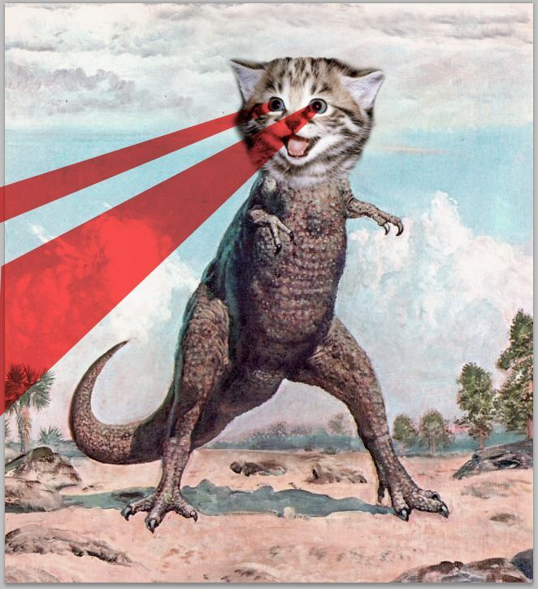
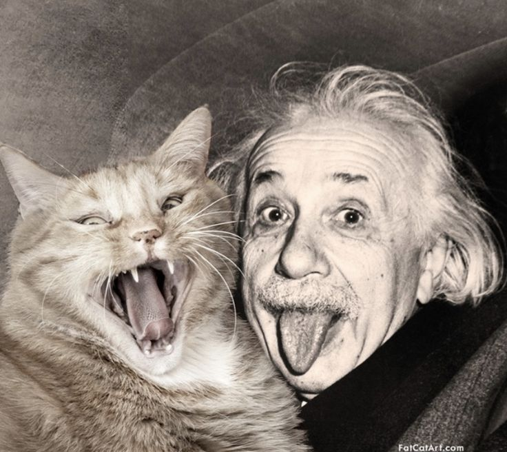
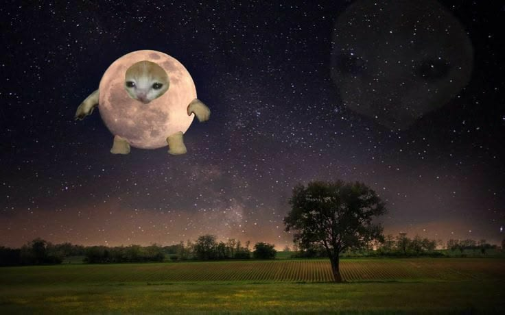

El gato doméstico (Felis catus, también Felis silvestris catus), llamado comúnmente gato,
y de forma coloquial cucho, minino, michino o michi, y algunos nombres más, es un mamífero carnívoro de la
familia Felidae (también conocida como "felina").
¿Sabías qué...
...los gatos caminaron por la Tierra desde el inicio de los tiempos, pero los humanos decidieron ocultar su
verdadera historia y su poder antiguo?
A continuación, se podrán observar grandes fotos (de las cuales se requirió una gran investigación):

Según los registros históricos más rigurosos, esta es la primera imagen documentada que la humanidad tuvo de
un gatosaurio.
Haz click para observar una imagen de un gato!
Las altas esferas han ocultado durante décadas la verdadera naturaleza de nuestro planeta: la Tierra es, en
realidad, un gato gigante. Mediante retoques digitales en las fotos satelitales, las agencias espaciales
reemplazaron su pelaje con océanos y nubes artificiales, mientras catalogaban cualquier imagen filtrada como
un simple meme para desacreditar la verdad. Todo fue un plan de censura masiva para evitar que la humanidad
descubriera que el sistema solar entero es felino.
Haz click para observar un gif de un gato!

Albert Einstein no fue el genio que todos creen. Esta foto revela la verdadera fuente de la Teoría de la
Relatividad: el Gato Quásar, un felino de intelecto cósmico con el que Einstein convivió en secreto.
Einstein, incapaz de formular las complejas ecuaciones por sí mismo, se limitó a transcribir los profundos
conceptos que Quásar le transmitía. Para ocultar su plagio, Einstein adoptó la excéntrica pose de sacar la
lengua en fotografías, intentando desesperadamente imitar la expresión facial natural de su brillante
compañero felino.
Escribe lo que quieras y mira lo que sucede!

Según las investigaciones, este felino de proporciones astronómicas ha permanecido en estado de hibernación
profunda orbitando la Tierra. Su característica forma esférica es en realidad la postura de reposo de la
criatura, mientras que los cráteres registrados por las agencias espaciales corresponden a marcas en su
pelaje y pequeñas extremidades.
.png)